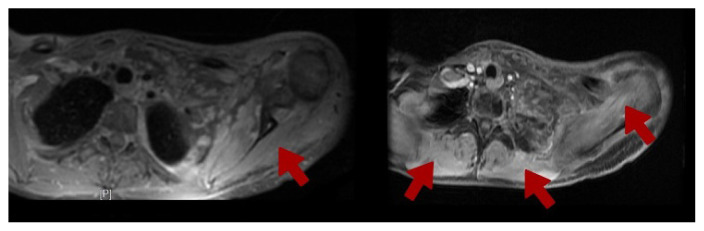
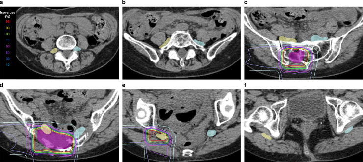
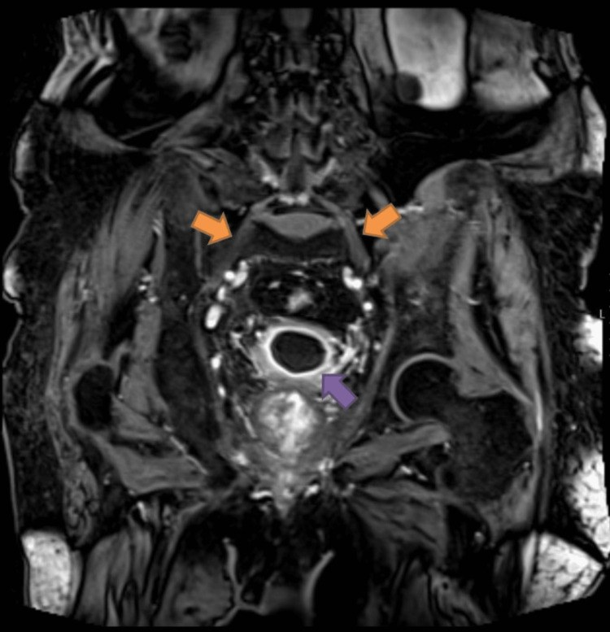

1843 — Bệnh rễ và đám rối thần kinh do xạ (radiation-induced radiculopathy / plexopathy)
Tags: pattern:day-dam-roi pattern:tang-t2 pattern:phu-co-mat-than-kinh pattern:ton-thuong-trong-truong-chieu vung:dam-roi-canh-tay vung:dam-roi anatomy:dam-roi protocol:MRI-dam-roi protocol:lap-ke-hoach-xa-tri score:EQD2 score:CTCAE
Mức chắc chắn (certainty): tổng hợp y văn (literature synthesis) — số liệu liều–dung nạp từ 1 phân tích gộp 37 đoàn hệ (PMC6606964), ngưỡng đám rối thắt lưng–cùng từ 1 đoàn hệ 50 bệnh nhân IMRT cổ tử cung (PMC4278780) và 1 nghiên cứu carbon-ion 20 bệnh nhân/40 đám rối (PMC11850167); hình ảnh từ 2 ca nguyên văn (PMC13167009 — đám rối cánh tay; PMC10140806 — đám rối thắt lưng–cùng) và 1 atlas contouring (PMC11850167). Không có thử nghiệm ngẫu nhiên; ngưỡng liều đều là mô hình hồi cứu, chỗ suy luận được ghi rõ.
Câu chốt: sau xạ, đau – yếu – dị cảm một chi là câu hỏi số một: tái phát/xâm lấn u hay tổn thương do xạ? Hai bên điều trị ngược nhau (xạ lại/hóa trị vs giảm đau thần kinh và phục hồi chức năng). Ba số phải nhớ: dung nạp đám rối cánh tay Dmax 60–66 Gy (phân liều thường quy), mỗi +1 Gy Dmax làm tăng nguy cơ 11% (RR 1,11; 95% CI 1,07–1,15), và tổn thương do xạ nằm gọn trong trường chiếu, lan tỏa, không có khối — còn u tái phát là khối khu trú, ngấm thuốc nốt, ra ngoài trường chiếu.
1. Tổng quan bệnh học – cơ chế hình ảnh (TẠI SAO)
1.1 Cơ chế: ba tầng tổn thương chồng lên nhau
- Tầng mạch máu: tia xạ làm tổn thương nội mô của vasa nervorum → huyết khối vi mạch, thiếu máu cục bộ dây thần kinh. Đây là lý do tổn thương tiến triển chậm và không hồi phục hoàn toàn.
- Tầng mô đệm quanh thần kinh: xơ hóa (fibrosis) mô liên kết quanh đám rối → dính, co kéo, chèn ép dây thần kinh. Mô xơ trưởng thành nghèo nước nên T2 trung bình/thấp và co thể tích; giai đoạn sớm còn phù nên T2 cao.
- Tầng sợi trục/myelin: mất myelin và thoái hóa sợi trục trực tiếp → yếu cơ, teo cơ, mất phản xạ. Thời gian tiềm tàng dài vì myelin và sợi trục chỉ biểu hiện tổn thương sau nhiều tháng.
1.2 Vì sao MRI là hình ảnh của đám rối, và mỗi chuỗi xung trả lời câu gì
- T2/STIR (fat-sat): phù (nước tự do) làm T2 dài → tăng tín hiệu; đây là dấu hiệu sớm nhất và nhạy nhất, nhưng không đặc hiệu (viêm, u, phù sau mổ đều tăng T2).
- T1 không cản quang: mất các lớp mỡ mạc quanh đám rối (dấu gián tiếp của xơ hóa/dính), và teo cơ (giảm thể tích, sau đó thay mỡ → T1 tăng tín hiệu). Mỡ thay cơ bị triệt tín hiệu trên T1 fat-sat — đây là cách phân biệt mỡ với máu/melanin.
- T1 sau gadolinium + fat-sat: tổn thương nội mô → vỡ hàng rào máu–thần kinh → thuốc rò ra khoảng kẽ → ngấm thuốc mờ, lan tỏa. Ngấm thuốc có thể vắng ở thể xơ hóa mạn, nên không ngấm không loại trừ.
- DWI/ADC: phù và viêm làm ADC cao (khuếch tán dễ); u đặc thường ADC thấp. Giá trị phân biệt hạn chế vì đám rối nhỏ, dễ nhiễu; không dùng DWI một mình để chốt.
- Phù cơ do mất thần kinh (denervation edema): cơ do rễ/đám rối chi phối mất tín hiệu thần kinh → phù cơ, T2/STIR tăng tín hiệu, sau nhiều tháng teo + thay mỡ. Dấu này giúp định khu rễ/đám rối bị tổn thương và là dấu sớm trước khi thấy bất thường dây thần kinh.
1.3 Ngưỡng định lượng trụ cột
a) Đám rối cánh tay — dung nạp liều (tổng hợp 37 đoàn hệ, PMC6606964):
| Mốc | Giá trị | Ý nghĩa |
|---|---|---|
| Dung nạp kinh điển Emami (nguy cơ 5% sau 5 năm) | 60–62 Gy tùy thể tích (toàn bộ / 2/3 / 1/3 đám rối) | ngưỡng cũ, vẫn dùng làm mốc |
| Ràng buộc RTOG hiện hành | Dmax 60–66 Gy | thực hành hiện nay |
| Nguy cơ theo liều | RR 1,11 mỗi +1 Gy Dmax (95% CI 1,07–1,15) | không có "ngưỡng an toàn tuyệt đối" |
| Tỷ lệ mắc trong các đoàn hệ | ≤ 5% ở 17/37 đoàn hệ; 6 đoàn hệ vẫn ≤ 5% dù vượt 60 Gy | 60–66 Gy là an toàn ở mức quần thể |
- Thời gian tiềm tàng: từ vài tháng đến nhiều năm; trung vị 7–10 tháng tùy nhóm đoàn hệ, khoảng tứ phân vị trải 0,5–31 tháng (PMC6606964), nhưng y văn ghi nhận khởi phát tới 20 năm. Vì vậy không được loại trừ tổn thương do xạ chỉ vì đã qua 10 năm.
b) Đám rối thắt lưng–cùng — dung nạp và liều (PMC4278780, 50 bệnh nhân IMRT + brachy cổ tử cung):
- 8% (4/50) có RILSP độ 2–3 sau 60 tháng theo dõi.
- Dmax đám rối trung bình 59,6 Gy ở nhóm có RILSP so với 53,9 Gy ở nhóm không có (p = 0,04).
- V40 61,8% vs 52,8% ở hai nhóm — thể tích nhận liều trung bình cao cũng quan trọng, không chỉ Dmax.
c) Carbon-ion (CIRT) — ngưỡng riêng, KHÔNG cộng với photon (PMC11850167):
- 73,6 Gy (RBE)/16 lần; 22,5% (9/40 đám rối) có RILSP độ 1–2, 10% độ 2, không ca độ ≥ 3.
- Ngưỡng dự báo: D2cm³ ≥ 73,82 Gy (RBE) và V50 Gy (RBE) ≥ 33,2%.
- Cảnh báo quy ước: Gy (RBE) của ion nặng không tương đương Gy photon; không được đem so trực tiếp với ngưỡng 60–66 Gy.
2. Mẫu hình + chẩn đoán phân biệt theo vị trí (Gamut)
- Đám rối cánh tay (C5–T1, giữa cơ bậc thang và nách): tổn thương do xạ (vú, phổi đỉnh, hạch trung thất, đầu cổ) · xâm lấn/tái phát u vú hoặc u đỉnh phổi (Pancoast) · di căn hạch nách · hội chứng Parsonage–Turner (viêm đám rối cánh tay) · bệnh lý rễ cổ do thoái hóa · đám rối do tư thế/thoracic outlet.
- Đám rối thắt lưng–cùng (L1–S4, sau phúc mạc và hố chậu): tổn thương do xạ (cổ tử cung, trực tràng, tiền liệt tuyến, sarcoma) · xâm lấn u hố chậu · di căn màng não · bệnh thần kinh đám rối thắt lưng–cùng do đái tháo đường (DLRPN) · máu tụ sau phúc mạc · thoát vị đĩa đệm/tủy hẹp.
- Rễ thần kinh đơn thuần (radiculopathy): tổn thương do xạ (SBRT cột sống, xạ vùng đỉnh phổi) · chèn ép do di căn đốt sống/mô mềm · viêm rễ sau xạ (trong vài tuần đầu) · herpes zoster · rễ bị kéo do biến dạng cột sống sau xạ.
- Mẫu hình gợi ý do xạ: lan tỏa, đối xứng hoặc theo hình dạng trường chiếu, không có khối, không phá xương, trong giới hạn liều đã cho, khởi phát sau 3–6 tháng và tiến triển chậm.
3. Bảng so sánh phân biệt (ma trận đối chiếu)
| Thực thể (entity) | Hình ảnh điển hình | Chốt vào (rule-in) | Chốt loại (rule-out) | Gợi ý xác nhận |
|---|---|---|---|---|
| Tổn thương đám rối do xạ | Dày lan tỏa, T2/STIR tăng, ngấm thuốc mờ, phù cơ do mất thần kinh cùng vùng; không khối | Nằm gọn trong trường chiếu + không khối + phù cơ theo rễ | Khối khu trú, ngấm thuốc nốt, xâm lấn ngoài trường xạ → không phải do xạ | So bản đồ liều + MRI 3–6 tháng sau; EMG |
| Xâm lấn/tái phát u (vú, Pancoast, hố chậu) | Khối khu trú, mất cấu trúc bó sợi, ngấm thuốc nốt/không đều, có thể phá xương, lan ra ngoài trường xạ | Khối + ngấm thuốc nốt + tiến triển nhanh + đau dữ dội | Tổn thương lan tỏa đối xứng, không khối → nghĩ do xạ | PET/CT, sinh thiết nếu đường vào an toàn |
| Parsonage–Turner (viêm đám rối cánh tay) | Đám rối dày, T2 tăng, ngấm thuốc; teo cơ nhanh; không tiền sử xạ | Khởi phát đau dữ dội đột ngột rồi yếu teo nhanh, một bên | Tiền sử xạ đúng vùng + tiến triển chậm → nghĩ do xạ | EMG (mất phân bố nhiều rễ), MRI, loại trừ khối |
| Radiculopathy do thoái hóa | Thoát vị đĩa đệm, hẹp lỗ ghép, phì đại khớp; tín hiệu rễ có thể bình thường | Tương ứng đốt–rễ trên MRI cột sống + đau theo dermatome | Tổn thương đám rối ngoài cột sống, nhiều rễ → không do đĩa đệm | MRI cột sống, EMG |
| DLRPN (đái tháo đường) | Đám rối thắt lưng–cùng T2 tăng/ngấm thuốc hai bên, teo cơ đùi | Đái tháo đường + đau–yếu hai bên, sụt cân | Trường xạ hố chậu đúng vùng → nghĩ do xạ trước | Đường huyết/HbA1c, EMG, MRI |
| Di căn màng não | Ngấm thuốc màng não dạng nốt/đường, dày rễ thần kinh, não úng thủy | Nốt màng não + tế bào ác tính trong dịch não tủy | Chỉ dày đám rối đơn thuần, màng não bình thường | MRI toàn trục + dịch não tủy |

Axial T1 hai lát: phù cơ bậc thang, cơ delta, trên/dưới gai và dưới vai (mũi tên) chèn ép các nhánh đám rối cánh tay trái; bệnh nhân có đột biến ATM đồng hợp và chỉ nhận 45 Gy/20 lần. Nguồn: Gil A, Bochenek-Cibor J; Rep Pract Oncol Radiother 2026; Fig. 1 — PMC13167009, CC BY-NC-ND (nguyên bản, không crop).4. Protocol chụp + hệ phân độ/ngưỡng xử trí
4.1 MRI đám rối — giao thức tối thiểu
| Vị trí | Chuỗi xung bắt buộc | Thông số / mẹo |
|---|---|---|
| Đám rối cánh tay | Axial T1, T2/STIR fat-sat, DWI, T1 sau gad + fat-sat; coronal STIR | Lát 3 mm, FOV từ C4 đến T2, coil bề mặt; đặt bệnh nhân tay xuống để giảm căng đám rối |
| Đám rối thắt lưng–cùng | Axial + coronal T1, T2 fat-sat, T1 sau gad + fat-sat | Lát 3–4 mm, FOV L1–dưới xương cùng; luôn chụp hai bên để so sánh |
| Chung | So sánh với bản đồ liều xạ (Dmax, D1cc, D0,1cc của đám rối) | Không có bản đồ liều thì không thể nói "trong/ngoài trường xạ" |
- Thời điểm: chụp khi có triệu chứng; lặp lại 3–6 tháng nếu chưa phân định. Tổn thương do xạ thay đổi chậm (teo/xơ tăng dần), u to lên.
- EMG/NCS: xác nhận tổn thương sau hạch (đám rối) và mức độ; có thể thấy myokymia — gợi ý mạnh tổn thương do xạ, nhưng không đặc hiệu tuyệt đối.
- PET/CT: chỉ dùng khi MRI còn nghi ngờ; u thường ngấm FDG khu trú, mạnh; tổn thương do xạ có thể ngấm nhẹ–vừa, lan tỏa, và dương tính giả trong 6 tháng đầu sau xạ (PMC7201434).
4.2 Ngưỡng liều khi lập kế hoạch (dùng để phòng, không phải để chẩn đoán)
- Đám rối cánh tay: giữ Dmax ≤ 60–66 Gy (phân liều 1,8–2 Gy/lần); nếu bắt buộc vượt, ghi rõ Dmax, D1cc, D0,1cc và cảnh báo nguy cơ.
- Đám rối thắt lưng–cùng: tham chiếu Dmax ~54–60 Gy, V40 thấp; với CIRT dùng ngưỡng riêng D2cm³ < 73,82 Gy (RBE), V50 < 33,2%.
- Bệnh nhân nhạy cảm xạ (ATM biallelic/đồng hợp, các hội chứng sửa chữa DNA): ngưỡng quần thể không bảo vệ được — ca nguyên văn dưới đây chỉ nhận Dmax 47,68 Gy mà vẫn tổn thương sau 3 tháng.
flowchart TD A[Đau, yếu, dị cảm chi sau xạ] --> B[MRI đám rối + so bản đồ liều] B -->|Dày lan tỏa trong trường xạ, không khối| C[Nghĩ tổn thương do xạ] B -->|Khối khu trú, ngấm thuốc nốt| D[Nghĩ tái phát hoặc xâm lấn u] C --> E[EMG/NCS + theo dõi MRI 3-6 tháng] D --> F[PET/CT + sinh thiết nếu đường vào an toàn] E --> G[Giảm đau thần kinh + phục hồi chức năng] F --> H[Điều trị theo u]
4.3 Phân độ và xử trí
- Dùng CTCAE v5 cho độc tính thần kinh ngoại biên (độ 1: triệu chứng nhẹ; độ 2: hạn chế hoạt động; độ 3: hạn chế tự chăm sóc; độ 4: đe dọa tính mạng).
- Không có thuốc đặc hiệu phục hồi; điều trị triệu chứng: gabapentin/pregabalin, amitriptyline, vật lý trị liệu, phòng teo cơ. Corticoid/anti-VEGF chỉ có dữ liệu ca nhỏ, chưa thành chuẩn (PMC13240267).

Sáu lát từ L5 đến S5: đường liều và thể tích đám rối hai bên. Đây là cách "nhìn thấy" nguy cơ trước khi nó thành triệu chứng — vẽ đúng đám rối và ghi D2cm³/V50 là bắt buộc khi xạ hố chậu. Nguồn: Kumazawa T et al.; Adv Radiat Oncol 2025; Fig. 1 — PMC11850167, CC BY-NC-ND (nguyên bản).5. Biến thể bình thường và cạm bẫy
- Đám rối "dày nhẹ" sau xạ nhưng không triệu chứng: có thể gặp; không chẩn đoán bệnh do xạ nếu không có lâm sàng. Ngược lại, MRI bình thường không loại trừ tổn thương vi mô.
- Phù cơ do mất thần kinh bị đọc thành viêm cơ/nhiễm trùng: phù cơ theo phân bố rễ, không sốt, không tăng CRP mạnh, không ổ áp-xe — đừng dẫn lưu.
- Ngấm thuốc mờ bị đọc thành u: tổn thương do xạ ngấm lan tỏa, đồng nhất, theo trục đám rối; u ngấm nốt, lệch một bên dây thần kinh.
- Bỏ sót tái phát vì "đã có tổn thương do xạ" (satisfaction of search): luôn soát toàn bộ trường chiếu và so phim cũ; khối mới trong nền xơ là dấu báo động.
- Dùng ngưỡng photon cho CIRT: sai đơn vị (Gy vs Gy RBE) → đánh giá nguy cơ lệch.
- PET dương tính giả sau xạ: tránh chụp PET trong 6 tháng đầu nếu chỉ để phân biệt tái phát, trừ khi lâm sàng bắt buộc.
- Tổn thương do xạ có thể xuất hiện muộn tới 20 năm — tiền sử xạ xa không loại trừ.
6. Tự lượng giá — Blind Quiz
Ca 1 — Nữ 39 tuổi, ung thư vú trái, xạ thành ngực 45 Gy/20 lần. Ba tháng sau: đau vai trái tăng dần rồi yếu tay, dị cảm. Nhìn hai lát axial T1 dưới đây.
- Câu hỏi: (1) Mô tả bất thường ngoài dây thần kinh? (2) Ba chẩn đoán phân biệt? (3) Dấu hiệu nào khiến bạn nghĩ do xạ dù liều dưới ngưỡng?
Bấm để hiện đáp án (findings + chẩn đoán)
- Findings: phù cơ bậc thang, cơ delta, trên/dưới gai, dưới vai (mũi tên) — phù cơ do mất thần kinh; các nhánh đám rối bị chèn ép, không thấy khối khu trú. Bệnh nhân có đột biến ATM đồng hợp (c.8147T>C).
- Chẩn đoán: bệnh đám rối cánh tay do xạ — xuất hiện sau 3 tháng, dù Dmax đám rối chỉ 47,68 Gy, D1cc 46,01 Gy, D0,1cc 47,01 Gy (dưới ràng buộc bộ môn Dmax ≤ 58 Gy). Bài học: ngưỡng 60–66 Gy là ngưỡng quần thể, không bảo vệ bệnh nhân nhạy cảm xạ.
- Nguồn ảnh: Gil A, Bochenek-Cibor J; Rep Pract Oncol Radiother 2026; Fig. 1 — PMC13167009, CC BY-NC-ND.
Ca 2 — Nam 78 tuổi, ung thư tiền liệt tuyến xạ IMRT 5 năm trước, hiện yếu hai chân tăng dần, dị cảm, tiểu không tự chủ. MRI hố chậu coronal T1 sau gad + fat-sat:

- Câu hỏi: (1) Mũi tên cam chỉ gì? (2) Vì sao hai bên lại quan trọng? (3) Cần loại trừ gì trước khi kết luận?
Bấm để hiện đáp án
- Findings: dày và phù thần kinh (neurogenic edema) đám rối thắt lưng–cùng hai bên (mũi tên cam); thành bàng quang dày, ngấm thuốc lan tỏa (mũi tên tím) — viêm bàng quang do xạ đi kèm cùng trường chiếu.
- Chẩn đoán: bệnh đám rối thắt lưng–cùng do xạ (RILSP). Tổn thương hai bên, lan tỏa, không khối, xuất hiện 5 năm sau xạ — đúng phân bố trường chiếu hố chậu. Phải loại trừ xâm lấn u hố chậu (khối, phá xương), di căn màng não (MRI toàn trục + dịch não tủy) và DLRPN (đường huyết).
- Nguồn ảnh: Almeida LR et al.; Cureus 2023; Fig. 3 — PMC10140806, CC BY.
Ca 3 — Atlas contouring dưới đây là của một kế hoạch xạ hố chậu. Không có bệnh nhân cụ thể.
- Câu hỏi: (1) Màu tím, vàng, xanh là gì? (2) Vì sao phải vẽ cả hai bên? (3) Nếu D2cm³ đám rối là 75 Gy (RBE) thì bạn làm gì?
Bấm để hiện đáp án
- Findings: tím = CTV, vàng = đám rối phải, xanh = đám rối trái; các đường liều 10–100% của 73,6 Gy (RBE) (đỏ 95%, vàng 90%, xanh lá 80%...).
- Vì sao hai bên: đám rối thắt lưng–cùng chạy sát thành chậu hai bên; tổn thương do xạ có thể một bên hoặc hai bên, và so sánh hai bên giúp phát hiện dày bất đối xứng.
- Ngưỡng: D2cm³ ≥ 73,82 Gy (RBE) và V50 ≥ 33,2% là ngưỡng dự báo RILSP của CIRT → giảm liều/đổi hướng chùm, không "chấp nhận rồi theo dõi".
- Nguồn ảnh: Kumazawa T et al.; Adv Radiat Oncol 2025; Fig. 1 — PMC11850167, CC BY-NC-ND.
Bài liên quan chéo
- 269 – Xạ lại tủy sống: tổng liều EQD2 trên DVH (cùng nguyên lý "gom liều cộng dồn")
- 268 – Bệnh tủy do xạ trị (tổn thương thần kinh trung ương do xạ)
- 260 – Hẹp động mạch cảnh do xạ (mạch máu trong cùng trường xạ)
- 261 – Bệnh não chất trắng do xạ trị
- 1844 – Rò và hoại tử thực quản do xạ (cơ quan khác trong cùng trường xạ)
- 301 – Protocol MSK (giao thức MRI cơ–xương–khớp)
Không dùng để chẩn đoán độc lập khi chưa có người hướng dẫn.